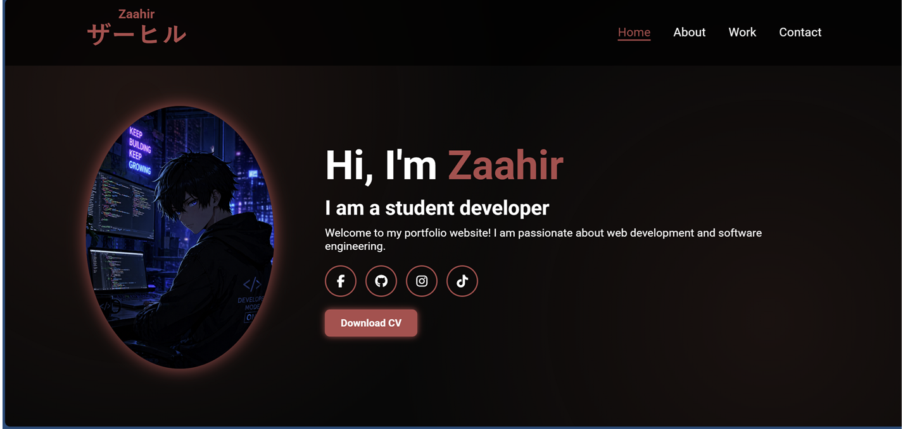
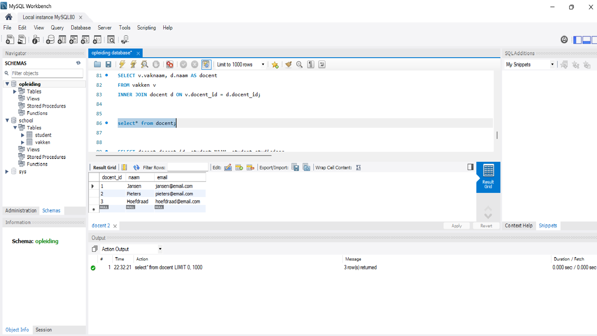
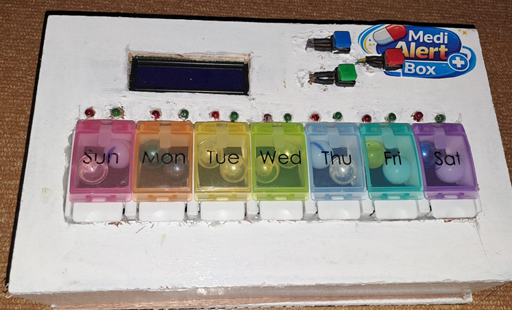
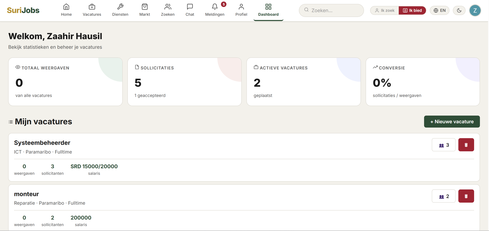

I designed and developed this website independently. The main challenge was ensuring the layout is fully responsive across different devices. I applied my knowledge of CSS Flexbox and Grid to create a clean, modern, and user-friendly interface.

Developed as a classroom practical, this project involved designing and structuring a student database system in MySQL. I practiced creating table relationships and writing SQL queries to effectively manage and retrieve data, which helped me gain a solid understanding of relational database principles.

Developed as a science fair project, this smart medical box aimed to improve medication management. I integrated sensors and a microcontroller to monitor and dispense medications on schedule, ensuring patients received their doses accurately and on time.

In this group project, we worked together to build the SuriJobs platform. Working in a team was a valuable experience that taught me how to collaborate effectively and align different parts of a project into one cohesive application.